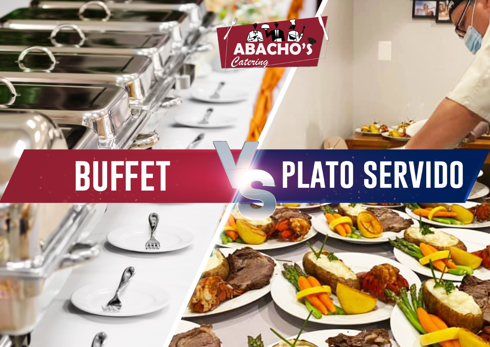

Ventajas de contratar un catering para tu evento
Las compañias de servicio de catering se han convertido en un buena opción a la hora de organizar cualquier tipo de evento por su profesionalidad y la capaciad de adaptarse a cualquier evento social.
Saber estos 7 secretos, harán que tu catering se vea increíble
Al momento de organizar un evento, independientemente del tipo de evento del que se trate, el servicio de catering juega un puesto fundamental.

Buffet VS Plato servido
A lo largo de nuestra trayectoria en el servicio de Catering, innumerables veces escuchamos esta pregunta ¿Qué es mejor, buffet o plato Servido?. Quiero compartir, desde mi experiencia, cada uno de ellos, para que te ayuden a tomar una decisión para ese momento especial.